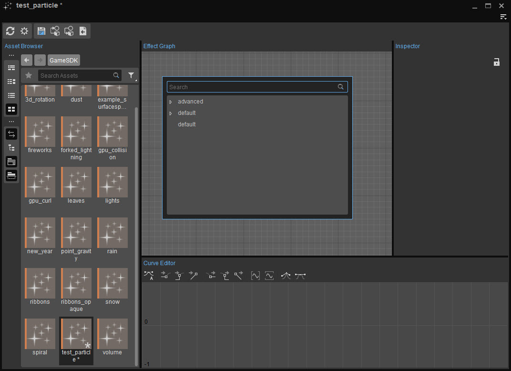

Overview
The Particle Editor Preset Library comprises a comprehensive list of predefined particle effects such as explosions, fire, embers or smoke that can be added to your level. These effects act as the base for the creation of much more sophisticated particle effects.
In order to access the Particle Presets Library, simply right click on a blank section in the Effect Graph.

Particle Preset Options
Advanced Folder
The components that can be found under advanced folder lets users add more advanced particle effects with movement and behavior properties. These components include features and modifiers that are most likely to be needed in order to create certain effects like fire, explosions, rain, etc. It mainly includes most of the features that users might need to make their effects even better.
Most of the effects will work fine but may need the addition of a texture and a tweak to the lighting.
There is also the advanced → default component; a sort of starting node which can be used to create more complicated effects with addition of other features.
| Option | Description |
|---|---|
default | The advanced → default preset is an overloaded component with way more features added than you will need for most of your effects. This effect does not mimic any specific effect; it just comes with a lot of features. |
embers | Floating fire embers. |
explosion_debris | Geometry in random (Omni) direction with gravity and collision options. |
explosion_fire | Slow sprites moving in a random direction. |
explosion_sparks | Small, fast moving sprites (stretched) with gravity. |
falling_debris | Geometry, with an offset, falling to the ground with collisions. |
falling_Leaf | Continuous sprites, slowly falling with gravity and the wind. |
falling_Smoke | Continuous sprites, falling with gravity, preset tiled textures (texture atlas). |
fire | Continuous sprites, moving like fire, preset tiled textures (texture atlas). |
floating_parts | Floating sprites/geometry for rivers or other directional movements. |
impact_debris | Geometry, with cone direction, gravity and collision. |
impact_sprites | Sprites, with cone direction, gravity and collision. |
lightning | Ribbon lightning setup. |
local_mist | Big sprites with fog/mist surrounding the camera position (follows camera). |
local_onsreen | Sprites on the screen (follows camera). |
local_rain | Sprites falling like rain surrounding the camera position (follows camera). |
mist | Big sprites and fog/mist are predefined. |
orbit | Sprite follows and orbits around the parent. |
shockwave | Multiple sprites in a circular direction. |
smoke | Continuous sprites with negative gravity and wind movement. |
trail | Ribbon, leaving a trail when moving (parent needs to move). |
vortex | Sprites rising with circular rotation around the parent. |
water_ribbon | Ribbon with gravity for small moving fluid streams/leaks. |
Default Folder
Contains effects that can be used to create the most basic components. The bare minimum setup presets like audio, sprites, GPU sprites, ribbon, etc. can be found in this folder. These components don't include any motion or timing feature and are not effect specific.
| Option | Description |
|---|---|
audio | Basic setup for Audio Triggers. |
decal | Basic setup for Decals. |
decal_immortal | Basic setup for Decal that stays forever (do not spawn too many of these as they keep on running). |
gpu_sprite | Basic setup for GPU Sprites. |
light | Basic setup for Lights. |
mesh | Basic setup for Meshes. |
mesh_immortal | Basic setup for Meshes that stay forever (do not spawn too many of these as they keep on running). |
ribbon | Basic setup for Ribbons. |
sprite | Basic setup for Sprites. |
tiled_sprite | Basic setup for animated Sprites (texture atlas). |
Default Component
The most basic component node. The component that is automatically created when a new effect is introduced to the editor.
For more information on the Particle Editor's node references, please refer to Particle Effect Features.